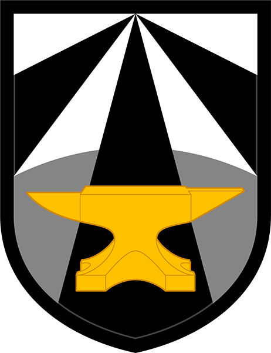

-
Postdoctoral Associate, Boston University
with Profs. Christos G. Cassandras, Calin Belta, and Roberto Tron; 2022 - Present
{optimal control, motion planning, machine learning, micron-scale robotics}
-

Intern, DEVCOM Army Research Laboratory
with Christopher M. Kroninger; Summers 2019 - 2021
{optimal control, flocking, aerodynamics, differential flatness}
-
Ph.D. Student, University of Delaware
with Prof. Andreas Malikopoulos, 2017 - 2022
{decentralized control, optimal control, robotics, software development, control systems}
-
Intern, Sandia National Laboratories
with Dr. Tracy Vogler and Kyle N Karlson, Summer 2016
{solid mechanics, optimization, software development}

-
M.S. Student, Marquette University
with Prof. John P. Borg, 2015 - 2027
{shock physics, fluid dynamics, topology optimization, linux, high performance computing}

-
Robotics Research Co-Op, P&H Mining
with Dr. Brian Slaboch and Wes Taylor, 2014 - 2015
{SLAM, state estimation, sensor fusion, Kalman filters}
-
B.S. Student, Milwaukee School of Engineering
with Prof. Luis A. Rodriguez, 2011 - 2015
{robotics, dynamics, control systems, fluid power, programming}